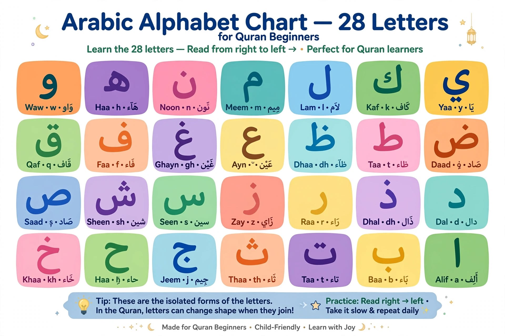

Arabic Alphabet for Quran Beginners: A 7-Day Starter Plan

Learning the Arabic alphabet is an important first step toward reading the Quran. Beginners need to recognize the letters, distinguish similar shapes, understand basic vowel marks and practice pronouncing each letter correctly.
Arabic has 28 commonly recognized letters. A seven-day practice plan can introduce the alphabet and help you begin building reading skills, but the time needed to read Quranic text confidently varies from learner to learner. Regular practice and feedback from a qualified teacher can make a significant difference.
Learn to recognize each letter before trying to read complete Quranic words. Practice its shape, sound and position in a word together.
Explore our Noorani Qaida course →The 28 Arabic Letters
Here is the commonly taught sequence of the Arabic alphabet. Arabic is written from right to left.
ا ب ت ث ج ح خ د ذ ر ز س ش ص ض ط ظ ع غ ف ق ك ل م ن ه و ي
Some learning materials discuss hamza (ء) separately because its spelling and behavior differ from those of the basic letter sequence. Your teacher can explain how hamza appears in Quranic words as you progress.
Learn Letters with Similar Shapes
Grouping letters with similar basic shapes can make them easier to recognize. Pay attention to the dots as well as the main body of each letter.
- ب، ت، ث: These letters share a similar basic shape but have different dot positions.
- ج، ح، خ: These letters have a similar outline, with differences in their dots.
- د، ذ: These letters have a similar shape, distinguished by the dot on ذ.
- ر، ز: These letters share a basic shape, with ز distinguished by a dot.
- س، ش: These letters share a basic outline, with three dots above ش.
- ص، ض: These letters have a similar outline, with ض distinguished by a dot.
- ط، ظ: These letters have a similar outline, with ظ distinguished by a dot.
- ع، غ: These letters share a basic shape, with غ distinguished by a dot.
Do not rely on shape alone. Some Arabic letters look similar but represent different sounds. Listening to a correct pronunciation and practicing with feedback can help you distinguish them.
For a structured introduction to reading, continue with our Noorani Qaida guide.
How Arabic Letters Change Shape
Many Arabic letters change their appearance depending on whether they appear alone or connect to other letters. Beginners commonly learn four forms: isolated, initial, medial and final.
- Isolated: The letter appears on its own.
- Initial: The letter begins a word and connects to the letter that follows when possible.
- Medial: The letter appears in the middle and connects on both sides when its letter type allows it.
- Final: The letter appears at the end of a word and may connect to the preceding letter.
Not every letter joins to the following letter. The six letters ا، د، ذ، ر، ز، و do not connect to the letter that comes after them in normal Arabic writing. This affects the appearance of letters within a word.
Practice reading letters in short combinations instead of memorizing isolated forms alone. You can also follow our guide on how to learn Quran online.
Makharij: Understanding Arabic Letter Articulation
Makharij al-huruf refers to the articulation points from which Arabic letters are pronounced. Learning these points helps Quran beginners distinguish sounds that may be unfamiliar in their first language.
- ب (Ba): Pronounced using both lips.
- م (Meem): Also articulated with both lips, with nasal resonance in relevant contexts.
- ق (Qaf): Articulated from the back of the tongue near the soft palate.
- ع (Ayn): Articulated from the middle region of the throat.
- ح (Ha): An Arabic throat sound that differs from the sound of ه.
These are introductory examples rather than a complete explanation of all articulation points. A teacher can demonstrate tongue placement, lip position and airflow while helping you avoid replacing Arabic sounds with similar sounds from English or another language.
Learn more about accurate Quran pronunciation in our guides to what Tajweed is and why it matters and how to improve Quran reading.
A Practical 7-Day Arabic Alphabet Starter Plan
Use this plan as an introduction, not a promise that every learner will master Quran reading in one week. Adjust the pace to your progress. If a group of letters is difficult, spend more time reviewing it before moving forward.
Day 1: Recognize the First Letter Groups
Begin with ا، ب، ت، ث، ج، ح، خ. Learn each letter's name and basic sound, and identify the differences between letters with similar shapes.
Day 2: Practice the Next Groups
Study د، ذ، ر، ز، س، ش، ص. Practice identifying the dots and distinguishing each letter when it is shown in isolation.
Day 3: Continue Through the Alphabet
Study ض، ط، ظ، ع، غ، ف، ق. Listen carefully to the sounds, especially letters whose pronunciation may be unfamiliar.
Day 4: Complete the Alphabet
Learn ك، ل، م، ن، ه، و، ي. Review the complete sequence and practice recognizing letters in random order rather than relying only on memorized sequence.
Day 5: Review Letter Shapes
Practice isolated, initial, medial and final forms where applicable. Pay special attention to the letters that do not connect to the following letter.
Day 6: Learn Basic Vowel Marks
Begin learning the short vowels: fatha (َ), kasra (ِ) and damma (ُ). Practice simple letter sounds with these marks under guidance, and learn to distinguish them visually.
Day 7: Review and Practice Simple Combinations
Review the letters, their shapes and the sounds you have learned. Try simple combinations suitable for your level with a teacher or a trusted learning resource. Continue practicing any letters or vowel marks that remain difficult.
After this introductory stage, many beginners benefit from a structured method such as Noorani Qaida to develop letter recognition, blending and reading skills progressively.
How Much Should Beginners Practice Each Day?
A short, regular practice session is a useful starting point. You might begin with 10–20 minutes a day and adjust according to your age, concentration and learning goals. Some learners need additional review before moving on to new material.
- Review previously learned letters before introducing new ones.
- Say the letter names and practice the sounds carefully.
- Mix up the order of the letters to test recognition.
- Practice written forms as well as isolated letters.
- Ask a qualified teacher to correct pronunciation when possible.
Once you develop basic reading skills, you can explore how to approach Quran memorization or our guide to Quran memorization for kids. Memorization and reading are related skills, but memorization should not replace learning to read accurately.
Frequently Asked Questions
How many letters are in the Arabic alphabet?
The Arabic alphabet is commonly taught as having 28 basic letters. Hamza is discussed separately in some learning materials because of its distinctive spelling and behavior.
Can I learn the Arabic alphabet in seven days?
You may be able to become familiar with the letters in a week if you practice consistently. Recognizing every letter quickly, learning its different forms and reading Quranic text accurately usually requires further practice.
Do all Arabic letters have four written forms?
Many letters have isolated, initial, medial and final forms. However, some letters do not connect to the letter that follows them, so their written forms do not follow the same joining pattern as other letters.
What should I learn after the alphabet?
A common next step is learning the short vowel marks and how letters combine into readable units. Noorani Qaida is one structured approach used to develop these foundational skills.
Can children and adults learn Arabic letters online?
Yes. Online learning can support both children and adults, provided the lessons match the learner's level and include opportunities to practice pronunciation and receive feedback.
Continue Your Quran Learning Journey
Learning the alphabet is the beginning of a longer process. With steady practice, careful pronunciation and suitable guidance, beginners can gradually develop the skills needed for Quran reading.
Explore our Noorani Qaida course or visit the courses page to learn about available learning options. You can also contact us through the registration page to ask about a trial lesson.
More Quran Learning Guides
- Online Quran Classes: The Ultimate Guide
- Noorani Qaida Online for Beginners
- Learn Egyptian Arabic Online in the USA
- Best Online Quran Classes for Kids in the USA
- Online Quran Classes for Adults in the USA
- Online Quran Classes in the UK
- How Much Do Online Quran Classes Cost?
- Female Quran Teacher Online
- Online Quran Classes for Kids in Canada
- How to Choose an Online Quran Teacher for Your Child
- How Long Does It Take to Memorize the Quran?
- One-Year Juz Amma Memorization Plan
- How to Keep Children Motivated to Learn Quran Online
- Balancing Quran Memorization and School
- How to Teach Kids Quran at Home
- What Is Tajweed and Why Is It Important?
- Online Ijazah Course in the USA and UK
- Quran Classes for Toddlers Ages 3–5
- Quran Classes for Reverts and New Muslims
- What to Expect from a Free Trial Quran Class
- Weekend Quran Classes for Kids in the USA